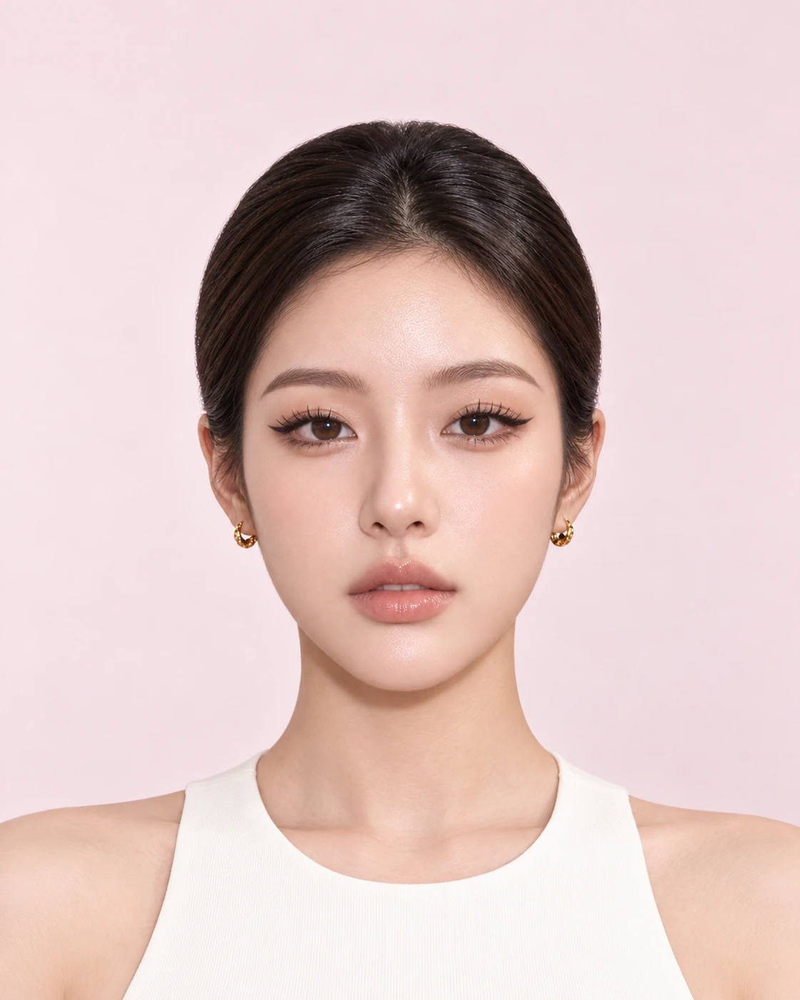
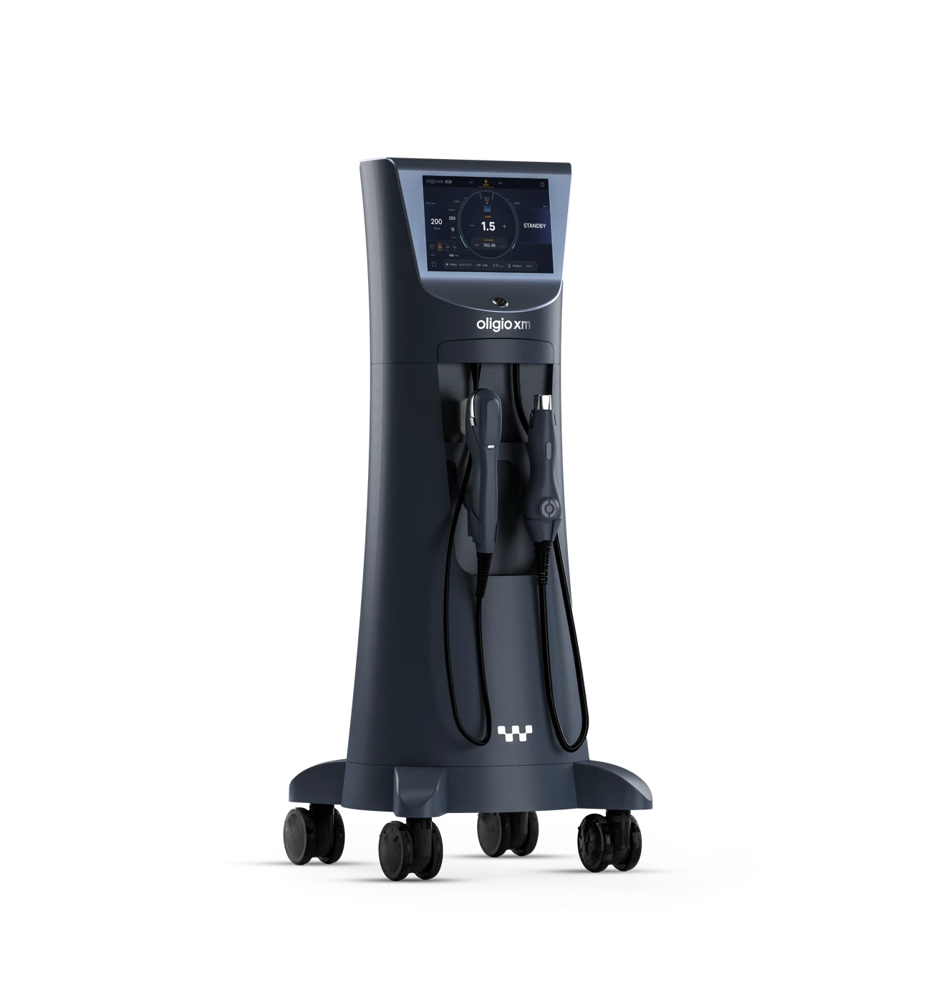
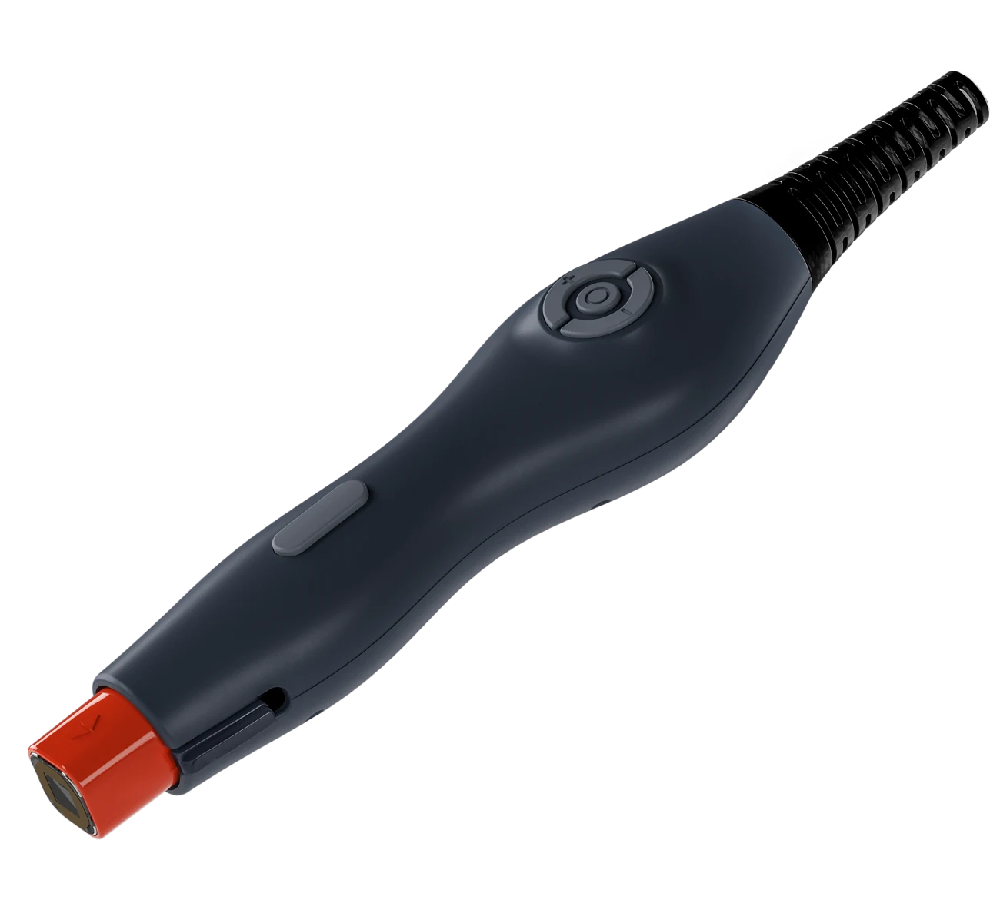
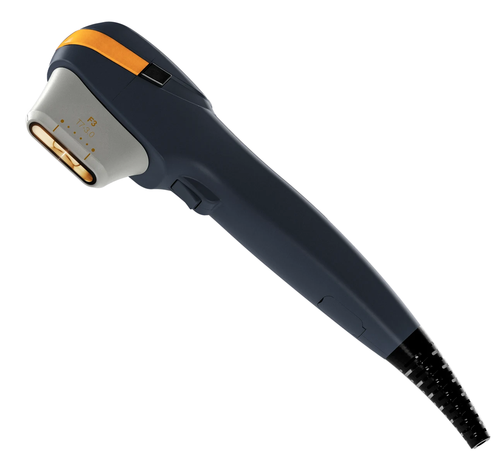
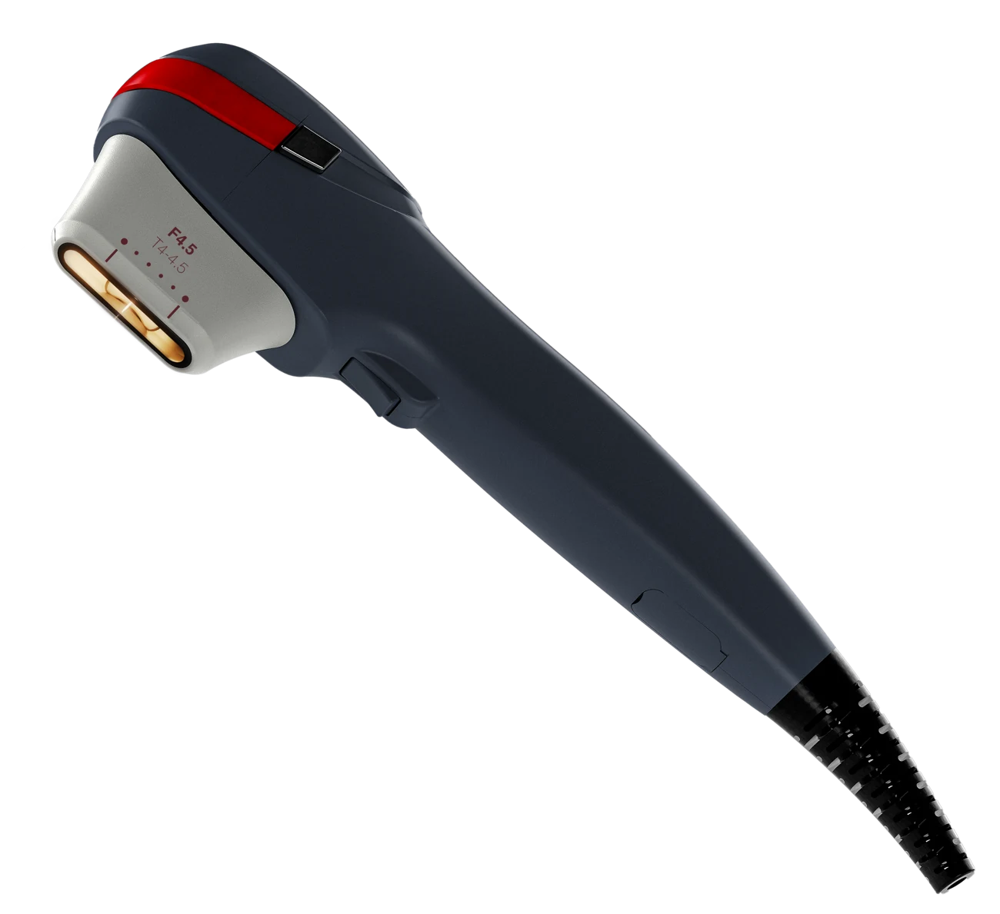

두 가지 에너지
넓게 열을 전달하는 고주파와
목표 깊이에 모이는 초음파.
BEAUTY BLOSSOM · OLIGIO XM
피부의 탄력부터,
얼굴선의 깊이까지.
고주파와 집속초음파,
내 피부에 맞춰 함께 설계하는 리프팅.
TWO ENERGIES. YOUR BALANCE.
올리지오 XM은 고주파(RF)와 집속초음파(HIFU)를 하나의 장비에 담았습니다. 피부의 탄력과 조직의 처짐을 함께 살피고, 필요한 모드와 깊이를 선택해 시술을 계획합니다.
넓게 열을 전달하는 고주파와
목표 깊이에 모이는 초음파.
고주파와 집속초음파로 구성한
G·X·Y·Z 네 가지 접근.
피부 두께와 지방 분포,
처짐의 방향까지 함께.
TREATMENT AREAS
이마부터 턱 아래까지, 부위별 피부 두께와 볼륨을 살펴 시술을 계획합니다. 시술 부위마다 사용할 팁과 에너지가 달라집니다.

이마의 잔주름과 피부 탄력을 살핍니다. 피부가 얇은 부위인 만큼 고주파 설정과 적용 범위를 세심하게 정합니다.
눈 주변의 잔주름과 탄력을 살피고 좁은 부위에 맞는 RF 팁을 고려합니다. 초음파를 동일하게 적용하는 부위는 아닙니다.
앞볼의 탄력과 볼륨 분포를 함께 확인합니다. 보존할 볼륨을 구분한 뒤 필요한 에너지와 범위를 상담합니다.
광대 아래에서 볼로 이어지는 조직의 처짐을 살핍니다. 얼굴의 굴곡과 지방 분포에 맞춰 접근합니다.
입가 아래와 턱선으로 이어지는 탄력과 처짐을 확인합니다. RF와 HIFU 중 필요한 모드의 구성을 정합니다.
턱 아래 조직의 두께와 처짐을 살핍니다. 초음파 카트리지 적용 여부와 범위는 진료 후 결정합니다.
눈가·관자놀이와 이마의 얇은 피부, 볼륨을 보존할 부위는 개별적으로 구분합니다. 실제 적용 가능 여부와 시술 범위는 의료진이 확인합니다.

MEET OLIGIO XM
피부 탄력이 느슨해진 부위와
조직의 처짐이 고민인 부위는 다를 수 있습니다.
조직에 열에너지를 전달하는 방식입니다. 피부 두께와 탄력 상태를 살피며 G·X 모드의 설정을 선택합니다.
초음파 에너지를 선택한 깊이에 모읍니다. 3.0mm·4.5mm 카트리지를 활용해 부위별 조직 상태에 맞춘 접근을 고려합니다.
ORIGINAL OLIGIO / OLIGIO XM
가장 큰 차이는 고주파에 집속초음파가 더해졌다는 점입니다. 사용할 수 있는 에너지와 소모품 구성이 넓어져, 피부 상태에 따라 선택할 범위가 달라집니다.
FROM OLIGIO X TO XM
에너지를 더 효율적으로 전달하도록 설계하고,
집속초음파 HIFU 기능을 더했습니다.
G · X
에너지가 전달되는 방식
피부 단면으로 살펴보는 기존 올리지오 vs 올리지오 XM
고주파에 집중한 접근
6.78MHz 모노폴라 RF를 이용합니다. 부위에 맞는 팁으로 조직에 열에너지를 전달하며 피부 탄력을 살핍니다.
고주파에 집속초음파를 더한 접근
RF 전용 핸드피스를 사용합니다. 피부 상태와 부위에 따라 고주파 모드와 에너지 설정을 선택합니다.
3.0mm 카트리지로 선택한 깊이에 초음파 에너지를 모읍니다. 조직 두께와 볼륨 분포를 먼저 확인합니다.
4.5mm 카트리지로 더 깊은 초점에 접근합니다. 피부 두께와 해부학적 구조를 확인해 적용 부위를 정합니다.
넓게 열을 전달하는 고주파, 목표 깊이에 모이는 초음파.
올리지오 XM은 두 에너지를 피부 상태에 맞춰 선택·조합합니다.
피부층의 두께와 초점 위치는 부위마다 다릅니다. 3.0·4.5mm는 초음파 카트리지의 초점 깊이이며, RF의 열 전달 범위와 같은 기준이 아닙니다.
| 구분 | 기존 올리지오 OLIGIO | 올리지오 XM OLIGIO XM |
|---|---|---|
| 에너지 구성 | 6.78MHz 모노폴라 RF | 모노폴라 RF + 집속초음파(HIFU) |
| 시술 설계 | 고주파를 이용한 피부 탄력 관리 | 고주파와 초음파를 선택·조합하는 깊이별 접근 |
| 모드와 소모품 | 부위에 맞춘 Face·Eye RF 팁 | G·X·Y·Z 모드 / RF 팁·초음파 카트리지 |
| 초음파 카트리지 | RF 기반 장비 | 3.0mm·4.5mm 초점 깊이 선택 |
| 냉각 기술 | 쿨링 스프레이와 미세 진동 지원 | 13X Chain Cooling™ 적용 |
| 상담에서 볼 점 | 피부 탄력과 부위별 RF 시술 계획 | 탄력·처짐·지방 분포를 고려한 에너지 조합 |
모바일에서는 표를 옆으로 밀어 비교할 수 있습니다.
두 장비의 이름만으로 적합성을 결정하지 않습니다. 볼륨을 보존할 부위와 탄력·처짐을 살필 부위를 구분하고, 내 얼굴에 필요한 에너지 구성을 상담합니다.
FOUR MODES, A PERSONAL PLAN
G·X 고주파 모드와 Y·Z 초음파 모드로 피부의 탄력과 깊은 조직의 처짐을 함께 살핍니다. 필요한 모드와 팁·카트리지는 부위별로 선택합니다.

피부의 잔주름과 피부결, 진피의 탄력을 살피는 고주파 모드입니다. 피부 상태에 맞춰 조사 범위와 설정을 정합니다.
보다 깊은 조직의 탄력과 지지를 고려하는 고주파 모드입니다. 부위별 피부 두께와 열 반응을 보며 계획합니다.


깊은 조직의 지지와 중안면의 처짐을 살피는 초음파 모드입니다. 볼륨 분포와 얼굴 구조를 확인해 필요한 부위를 선택합니다.
SMAS 근막층과 하안부·턱선의 처짐을 고려하는 초음파 모드입니다. 해부학적 구조에 맞춰 적용 여부와 범위를 정합니다.
3.0mm 초점 깊이의 카트리지를 사용합니다. 부위별 조직의 두께와 처짐을 확인한 뒤 적용 여부를 정합니다.
4.5mm 초점 깊이의 카트리지를 사용합니다. 깊은 조직의 처짐을 살피며, 얼굴 구조에 맞춰 적용 부위를 구분합니다.
3.0mm·4.5mm는 초음파 카트리지의 초점 깊이입니다. 고주파 모드의 에너지 전달 범위와 같은 의미가 아니며, 실제 조직 두께와 적용 범위는 개인별로 다릅니다.
13X CHAIN COOLING™
13X Chain Cooling™을 통해 에너지 전달 과정의 피부 표면 냉각을 지원합니다. 열에너지를 활용하는 시술인 만큼, 피부 반응을 확인하며 진행합니다.
온도와 임피던스 모니터링을 바탕으로 시술 상태를 살핍니다. 체감되는 열감과 통증은 개인과 모드에 따라 다르므로, 불편함은 의료진에게 알려주세요.
DESIGNED AROUND YOU
뷰티블라썸의원은 고민 부위와 이전 시술 이력, 중요한 일정을 함께 듣고 시술 계획을 상담합니다.
잔주름과 탄력, 볼·턱선의 처짐을 구분하고 피부 두께와 지방 분포를 살핍니다.
RF·HIFU 중 필요한 모드와 팁·카트리지를 정하고, 모드별 샷 수와 적용 범위를 안내합니다.
상담에서 정한 계획에 따라 진행하며 열감과 불편함, 피부 반응을 함께 확인합니다.
시술 후 관리와 경과 확인 방법을 안내합니다. 변화와 추가 시술 시점은 개인별로 상담합니다.
AFTERCARE
사용한 모드와 시술 범위에 따라 안내가 달라질 수 있습니다. 진료 후 받은 개별 관리 안내를 따라주세요.
붉음, 열감, 붓기나 불편함이 나타날 수 있습니다. 증상이 심해지거나 오래 지속되면 병원에 연락해 확인받아 주세요.
피부를 세게 문지르지 않고 자극을 줄여 관리합니다. 세안·메이크업 시점은 시술 후 피부 상태에 맞춰 안내받으세요.
보습과 자외선 차단을 이어가며 피부를 보호합니다. 새로운 자극성 제품의 사용 시점도 상담에서 확인하세요.
붉음과 열감이 남아 있는 동안 격한 운동·음주·사우나를 피합니다. 복용 중인 약은 의료진에게 알리고 임의로 중단하지 마세요.
고주파(RF)와 집속초음파(HIFU)를 하나의 장비에서 사용할 수 있는 리프팅 시술입니다. G·X·Y·Z 네 가지 모드를 피부 상태와 적용 부위에 맞춰 선택해 탄력과 처짐을 함께 살펴봅니다. 고주파 팁과 3.0mm·4.5mm 초음파 카트리지를 활용합니다.
기존 올리지오는 모노폴라 고주파를 사용하는 장비입니다. 올리지오 XM은 고주파에 집속초음파를 더해, RF 전용 팁과 3.0mm·4.5mm 초음파 카트리지를 선택·조합할 수 있는 점이 핵심 차이입니다.
서로 다른 라인업입니다. 올리지오 X는 고주파 기반 장비이며, XM은 고주파와 집속초음파를 함께 갖춘 장비입니다. 이름이 비슷하므로 상담할 때 실제 장비와 사용할 에너지 구성을 확인하세요.
고주파는 조직에 열에너지를 전달하는 방식이고, 집속초음파는 선택한 깊이에 에너지를 모으는 방식입니다. 피부 두께, 지방 분포, 처짐의 방향을 살펴 사용할 모드와 부위를 정합니다.
초음파 카트리지가 목표로 하는 초점 깊이입니다. 실제 피부와 조직의 두께는 부위와 개인에 따라 다르므로, 깊이 숫자만 보고 카트리지를 정하지 않습니다.
항상 모든 모드를 적용하는 것은 아닙니다. 원하는 변화와 피부 상태에 따라 필요한 모드를 선택하고, 적용 부위와 에너지 설정을 조절합니다.
총 샷 수와 함께 RF와 HIFU의 구성, 모드별 샷 수, 시술 부위를 확인해야 합니다. 서로 다른 에너지의 샷 수를 같은 기준으로 비교하기는 어렵습니다. 상담에서 내 피부에 필요한 구성을 안내받으세요.
열감이나 따끔함을 느낄 수 있으며, 모드·출력·부위와 개인의 민감도에 따라 다릅니다. 냉각 시스템은 피부 표면의 열 부담을 관리하는 데 사용하며, 불편함은 시술 중 의료진에게 알려주세요.
제공된 제조사 가이드북은 부위에 따라 약 15~30분을 안내합니다. 실제 시간은 모드 구성과 샷 수에 따라 달라지며 상담·준비·시술 후 확인 시간이 추가될 수 있습니다.
변화의 시점과 유지 기간은 피부 상태, 시술 구성과 생활습관에 따라 다릅니다. 일시적인 붓기나 열감이 가라앉는 경과를 보면서 변화를 확인하고, 추가 시술 시점은 진료 후 정합니다.
볼륨을 보존할 부위와 처짐을 살필 부위를 먼저 구분합니다. 이전 리프팅·필러·실리프팅의 부위와 시점, 남아 있는 불편함을 알려주시면 적합성과 시술 간격을 판단하는 데 도움이 됩니다.
비용은 에너지와 모드별 샷 수, 시술 부위와 구성에 따라 달라집니다. 뷰티블라썸의원 홍대합정의 네이버 예약·카카오톡·전화 상담으로 적용 비용과 가능한 일정을 확인할 수 있습니다.
제품 정보 참고: 올리지오 공식 안내 · 올리지오 XM 공식 안내 · 원텍 제품 발표
에너지와 모드 설명은 제조사 공개 자료 및 제공된 상담 가이드북을 바탕으로 구성했습니다.
나에게 맞는 이벤트를 펼쳐보세요.
Beauty, with care.
피부 상태와 원하는 변화를 세심하게 살피고,
정품·정량과 충분한 설명을 진료의 기본으로 생각합니다.

피부 상태와 일상, 원하는 변화를
함께 살펴 나에게 맞는 진료 계획을 세웁니다.

정품 사용과 정량 원칙을
진료의 기본으로 생각합니다.

개개인의 자연스러운 아름다움을 존중하며,
시술 과정과 관리 방법을 충분히 설명합니다.
Find us.
평일 10:00–20:00
주말·대체공휴일 10:00–16:30
점심시간 없이 진료 · 공휴일 진료는 문의
평일 10:00–20:00
주말·대체공휴일 10:00–16:30
점심시간 없이 진료 · 공휴일 진료는 문의